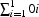

| << Prev | - Up - | Next >> |
Oz はステートフル(訳注:状態を持つ、代入可能とほぼ同義です)なデータ型を提供しています。これらはポート(port)、オブジェクト(object)、配列(array)、辞書(dictionary)(ハッシュテーブル(hash table))を含みます。これらのデータ型は、型のメンバーについて行われる操作の集合によってのみ特徴付けられる意味で、抽象です。それらの実装は常に隠蔽されており、実際には異なる実装が存在しますが、その対応する振る舞いは同じです。例えば、オブジェクトはコンパイラの最適化レベルに依存して完全に異なる方法で実装されています。それぞれのメンバーは、生成時の Oz-name によって概念的にタグ付けされた常にユニークなものです。メンバーは明示的な生成操作で生成されます。型テスト操作が常に存在します。加えて、メンバーはアクセス不可能になると消滅します。
ポートは抽象データ型の様な物です。ポート P はいくつかの送信者間で共有出来る非同期なコミュニケーションチャネルです。ポートは関連付けられたストリームを持っています。操作: {Port.new S ?P} はポート P を作り、ストリームの役割を担う変数 S に接続するよう初期化されます。操作: {Port.send P M} はメッセージ M を P に関連付けられたストリームの末端に追加します。ポートは次の挿入点としてストリームの末端を指し続けます。操作 {IsPort P ?B} は P がポートかどうかをチェックします。ストリーム S を誤って束縛するのを防ぐため、S は実際にはフューチャです。以下のプログラムはポートの簡単な例を示しています:
declare S P
P = {Port.new S}
{Browse S}
{Port.send P 1}
{Port.send P 2}
あなたが上の文を漸増的に入力する時、S が漸増的に定義されていくのが観察できるでしょう。
S
1|
1|2|_
ポートは Section 8.2 で論じられた純粋なストリームコミュニケーションよりも表現力の高い抽象です、なぜならポートは複数のスレッド間で共有でき、他のデータ構造に組み込めるからです。Oz ではポートはスレッド間の主要なメッセージパッシング機構です。
ポートはサーバへのコミュニケーションのエントリポイントとして使われます。Figure 9.1 に示されるプログラムはFIFOキューサーバの役割を行うスレッドを定義します。それは2つのポートを持っています、一つはアイテムを put を使って挿入するもの、他方はアイテムを get を使ってキューから取得するものです。単一代入(論理)変数の利用は、サーバを get と put 要求の順序に対して繊細ではなくします。get 要求はキューが空でも到着します。サーバは {NewQueueServer ?Q} によって生成されます。この手続きはレコード Q を1引数の手続きを持つフィールド名(feature) put と get と一緒に返します。Q へのアクセスを持っているクライアントスレッドはこれらの手続きを呼び出してサービスを要求できます。結果は論理変数を通してどの様に返っているかに注目して下さい。クライアントによるキュー中のアイテムの要求は {Q.get I} を呼び出す事です。サーバは最終的に I をアイテムに束縛して回答します。
declare
fun {NewQueueServer}
Given GivePort={Port.new Given}
Taken TakePort={Port.new Taken}
in
Given = Taken
queue(put:proc {$ X} {Port.send GivePort X} end
get:proc {$ X} {Port.send TakePort X} end)
endFigure 9.1: 並行キューサーバ、初版
以下の文のシーケンスを試しましょう。このプログラムはうまく動かないでしょう。何が問題なのでしょうか？
declare
thread Q = {NewQueueServer} end
{Q.put 1}
{Browse {Q.get $}}
{Browse {Q.get $}}
{Browse {Q.get $}}
{Q.put 2}
{Q.put 3}
問題は Given = Taken が2つのフューチャ間に同等性を課そうとしている事です。Given と Taken は読み取り専用で束縛できないフューチャである事を思い出して下さい。それで、キューサーバに対応付けられたスレッドは文 Given = Taken で一時停止します。この問題はこの文を Figure 9.2 に見られるように自身のスレッドで走らせる事で対応出来ます。1
問題は以下の様に働きます。{Q.put I0} {Q.put I1} ... {Q.put In} は要素 I0 I1 ... In をストリーム Given に漸増的に追加し、I0|I1|...|In|<Future1> として返ってきます。{Q.get X0} {Q.put X1} ... {Q.put Xn} は要素 X0 X1 ... Xn をストリーム Taken に漸増的に追加し、X0|X1|...|Xn|<Future2> として返ってきます。同等性制約 Given = Taken は Xi's を Ii's に束縛するでしょう。
declare
fun {NewQueueServer}
Given GivePort={Port.new Given}
Taken TakePort={Port.new Taken}
in
thread Given=Taken end
queue(put:proc {$ X} {Port.send GivePort X} end
get:proc {$ X} {Port.send TakePort X} end)
endFigure 9.2: 並行キューサーバ
注意: 上のコードは正しいですが、現在の Oz の実装に限定され、メモリリークを起こします。回避策として、下のコードをとりあえずの代替として使えます。
declare
fun {NewQueueServer}
Given GivePort={Port.new Given}
Taken TakePort={Port.new Taken}
in
thread
for X in Given Y in Taken do
X=Y
end
end
queue(put:proc {$ X} {Port.send GivePort X} end
get:proc {$ X} {Port.send TakePort X} end)
end
ポートは実際にはステートフルなデータ構造です。ポートは対応するストリームの末端を指す事によって内部的にローカルな状態を保持しています。Oz は抽象的でステートフルなデータ型を構築するために2つのプリミティブな装置チャンク(chunk)とセル(cell)を持っています。全ての他のチャンクのサブ型はチャンクとセルの項で定義出来ます。
チャンクはラベルが oz-name である事、引数を取る操作が無い事以外はレコードに似ています。これは、チャンクにおいて、コンポーネントのフィールド名(feature)がユーザー定義の操作に対してのみレキシカルスコープで可視なoz-nameである時、チャンクの特定のコンポーネントを隠す事が出来る事を意味します。
チャンクは手続き {NewChunk Record} によって作られます。これはチャンクをユニークなラベルを持つレコードと同じコンポーネントとして生成します。以下のプログラムはチャンクを生成します。
local X in
X={NewChunk f(c:3 a:1 b:2)}
{Browse X}
{Browse X.c}
end
これは以下を表示するでしょう。
<Ch>(a:1 b:2 c:3)
3注意: 構文的便宜として、式 E を X = E として変数と同じものにして X を使えば式の値を参照出来ます。上のプログラムはこの記法を用いて次の様に書き直せます
local X in
{Browse X={NewChunk f(c:3 a:1 b:2)}}
{Browse X.c}
end
Figure 9.3 で、ポートを実装するのにチャンクの情報隠蔽の能力の使用例を示します。
セルは代入可能な一つのコンポーネントを持つチャンクの様に見えます。セルは以下の様に生成されます。
{NewCell X ?C}
セルは初期内容 X と一緒に作られます。C がセルと束縛されています。Table 9.1 はセルについての操作を示しています。
操作 | 記述 |
|---|---|
| セル C を内容 X で生成する |
| C の内容を X に返す |
| C の内容を Y に修正する |
| C がセルかどうかのテスト |
| C の内容を X から Y にアトミックに交換する |
Table 9.1: セルの操作
以下のプログラムをチェックして下さい。最後の文はセルを1増加させています。thread ... end を出るとプログラムはデッドロックします。何故か分かりますか？
local I O X in
I = {NewCell a} {Browse @I}
{Assign I b} {Browse @I}
{Assign I X} {Browse @I}
X = 5*5
{Exchange I O thread O+1 end} {Browse @I}
end
セルと高階反復子(higher-order iterator)は便利な代入ベースのプログラミングを Oz で可能にします。以下のプログラムはセル J に  の値を累算(accumulate)しています。
declare J in
J = {NewCell 0}
{For 1 10 1
proc {$ I}
O N in
{Exchange J O N}
N = O+I
end}
{Browse @J}
Section 9.1 で記述されるポートは、チャンクとセルの仕様により安全な方法で実装できます、つまり偽造出来ない抽象データ型としてです。Figure 9.3 に見るプログラムはポートの実装です。最初 Oz-name はローカルに作られ、それは Port 操作によってのみアクセス出来ます。ポートはチャンクとして作られ、一つのコンポーネントのセルを持っています。セルはポートに関連付けられたストリームに初期化されています。型テスト IsPort はフィールド名 Port のチェックによって行われます。メッセージをポートに送ると、ストリームが自動的に更新され、セルはストリームの尾部を指すよう更新されます。
declare Port in
local
PortTag = {NewName} %新しい Oz name
fun {NewPort S}
C = {NewCell S} in
{NewChunk port(PortTag:C)}
end
fun {IsPort ?P}
{Chunk.hasFeature P PortTag} %チャンクの特徴のチェック
end
proc {Send P M}
Ms Mr in
{Exchange P.PortTag Ms Mr}
Ms = M|Mr
end
in Port = port(new:NewPort
is:IsPort
send:Send)
endFigure 9.3: セルとチャンクによるポートの実装
Figure 9.3 での実装はポートのストリームを保護しません。ストリームの保護は以下の様にフューチャを使って行われます。
declare Port in
local
PortTag = {NewName} %新しい Oz name
fun {NewPort FS}
S C = {NewCell S} in
FS = !!S % フューチャを生成する
{NewChunk port(PortTag:C)}
end
fun {IsPort ?P}
{Chunk.hasFeature P PortTag} % チャンクのフューチャをチェックする
end
proc {Send P M}
Ms Mr in
{Exchange P.PortTag Ms Mr}
Ms = M|!!Mr
end
in Port = port(new:NewPort
is:IsPort
send:Send)
endFigure 9.4: セルとチャンクによってポートを実装する
| << Prev | - Up - | Next >> |